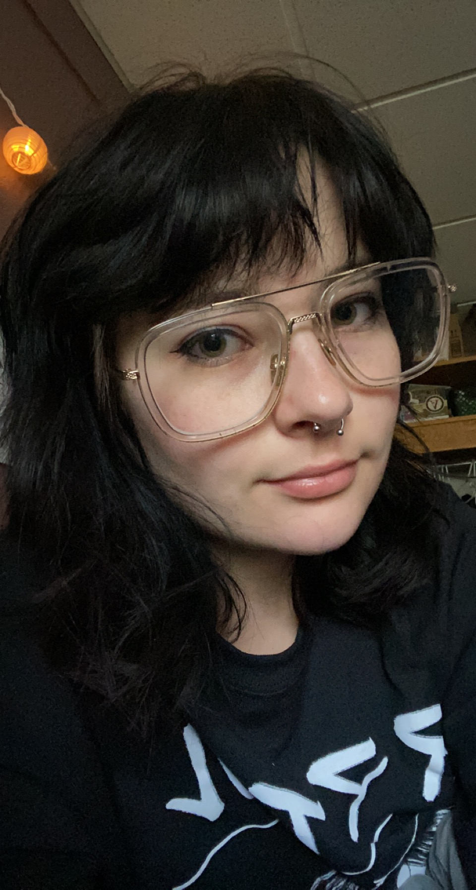

Hey there, I am a Senior at Penn State Behrend in the DIGIT program. I
have strong passions for the content creation (Photography and Film) side of this
major, but also enjoy the digital humanities side of it. I also am a big fan of
competitve esports and even joined the esports scene here at PSU Behrend recently to
compete with fellow classmates. A portfolio of my Photography can be found on this page
Jacob Huellen
Hello everyone! I'm a senior at Behrend. I took a DIGIT class to fulfill a credit reiquirment. I've thouroughly enjoyed my experience! My favorite aspect of the program is the data archival.
Savannah Ricks

Hi! I am a sophomore student at PSU Behrend and in my first year in the
DIGIT major. I used to be Computer Science major my first year of college, but I
knew that it wasn't for me, I liked technology but also Art, so I knew that DIGIT
was the major for me. Currently I am in DIGIT classes 100 and 110, working on many
projects throughout the semester and excited for more. If you want to see my
portfolio of all my projects, visit my website!
Tyler Akam
Hello! I'm a Junior at Penn State Behrend and I'm in the DIGIT Program.
I like to create a lot of different things and was drawn to the DIGIT Program
because of that. I like to create short films and other various art projects in my
spare time and hope to make stuff that people can enjoy! A portfolio of some of my
work can be seen here!